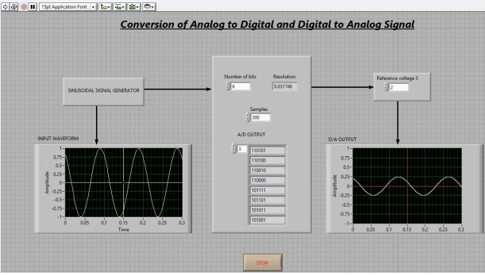

Shakshat Virtual Lab
INDIAN INSTITUTE OF TECHNOLOGY GUWAHATI
Home
About
People
Contact Us
Analog to Digital and Digital to Analog Conversion
Introduction
Theory
Procedure
Simulator
Self Evaluation
Reference
NOTE:
To Run this experiment you have to install Labview Run Time Engine in your system
Windows
Linux
Mac OS X

Click here to download the experiment